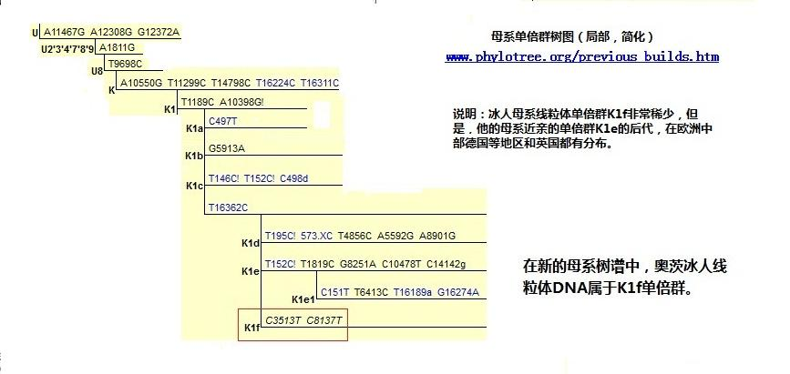
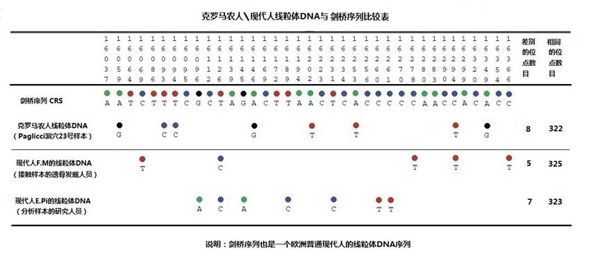

|
回主页
第3小节 谁是欧洲人的祖先？
谁是欧洲人的祖先？这个问题其实早就有了答案。上百万的欧洲居民和居住在美洲的欧洲移民的DNA样本测试，早已经做出了回答：他们的父系祖先是M168标记的男人，他们的母系祖先是L3标记的女人，他们都是Y染色体亚当和线粒体夏娃的后裔，无一例外。
那么，在过去曾经生活过的古人或古猿人，他们是什么类型的人呢？那个冰人奧茨是谁呢？那些克罗马农人是欧洲人的祖先吗？那些尼安德特人是欧洲人的祖先吗？所幸，通过DNA的解码，这些问题都给出了明确的答案。
一．冰人奧茨是灭绝的人种吗？
有报道说冰人奧茨是灭绝的人种，这是一个很大的误会。

图4-6 有关冰人奧茨的照片
1.有关冰人奧茨的报道
1991年，德国登山游客西蒙夫妇，在奥地利和意大利边境的意大利一侧的“奧茨”山峰，发现的一具在冰冻条件下保存良好的古尸，之后被定名为冰人奧茨（或奥兹冰人），并对他进行了详细的研究。
“冰人奧茨”生活在5300年以前，死时大约45岁，身高约1.65米，体重50公斤。他身穿草织袍子及皮背心，脚穿熊与鹿皮製造的防水鞋。
而根据花粉、尘粒及牙齿珐瑯质的分析，得知冰人的童年时代是生活在现今意大利波尔查诺北部。检查肺部发现肺中相当黑，推测应是常常吸入营火的烟。从分析冰人消化系统的残留物质得知，在死前八小时中，曾吃过羱羊和红鹿的肉、穀类、水果和麵包。
头髮的分析结果，发现含高量的铜及砷粒子，由於奥兹携带著一把高纯度（99.7%）铜斧，科学家推断奥兹曾参与铜的精鍊作业。
研究发现其肩部有箭伤，箭杆被拔出，箭头留在体内，拔出箭头时加重了箭伤。死因是失血过多，死前8小时正前往山谷。他身旁还放置了一把铜制的斧头和一个装有14只箭的箭袋。可推断死时奥茨正把随身物品放在一边休息。
除武器外，冰人还携带了一些毒品或者带有兴奋剂成分的药品。而且身上有多处纹身 ，左腕刺有2颗穗子，膝盖上刺有一个十字，并在背部刺有十条直线。部分纹身位置与中国的针灸学说的穴位相应，可能用作治疗消化系统寄生虫及骨骼退化等疾病。
在一个5千3百年前的人身上，取得这样详细的资料，的确是不常见的，也是十分珍贵的信息。但是，他是谁的祖先？他的后代子孙在哪里？这些只有通过他的DNA解码来回答了。
2. 冰人奧茨的线粒体DNA解码
意大利博尔扎诺市的提洛尔区（Tyrol,
Bolzano, Italy）是冰人奧茨的发现地，因此他还有另外一个名字：提洛尔的冰人（Tyrolean Iceman）。冰人发现在奥地利和意大利的国境线上，就冰人的归属曾经发生过争论。最后精确的定位认定冰人是位于意大利境内92.56米处，因此被就近保存在意大利博尔扎诺市的考古博物馆。近年来，该博物馆在网上发布了冰人高清晰度的照片，实在令人惊叹！其网址是：
http://www.icemanphotoscan.eu/
2008年11月，“当代生物学”期刊（Current
Biology）刊登了一份研究报告：“提洛尔冰人的完整线粒体基因组序列”（“Complete Mitochondrial Genome
Sequence of the Tyrolean Iceman”），该报告由意大利的卡梅里诺大学（University of Camerino）, 意大利国家生物医学技术研究所（Institute
for Biomedical Technologies
National Research Council）和英国的利兹大学（University of Leeds，UK）的研究人员撰写[注释1]。他们从线粒体DNA编码上，进一步詮解了冰人奧茨，并由此理清了冰人的母系来源，这是从冰人身体解剖学上不可能得到的信息。
正如报告标题所表述的，他们得到的是冰人的线粒体DNA完整序列，到目前为止，这是首个的、最古老“现代人”的线粒体DNA完整序列。他们将此序列的16569个碱基字符代码，逐个与“修正剑桥参照序列”（rCRS）的字符代码对照，发现有30个字符代码的区别，并列出了各点字符代码的变化。
同时，他们也将冰人的序列与线粒体谱系树（母系树）的DNA突变点比较，确定冰人的母系属于K1单倍群下面的分支单倍群，和这个单倍群最亲近的分支是单倍群K1e。根据这个报告，母系树管理的专家们给冰人线粒体DNA单倍群命名为K1f单倍群。

图4-7冰人奥茨线粒体DNA单倍群所在位置
3. 冰人奧茨的Y染色体DNA解码
2012年2月，英国《自然·通信》期刊登载了关于冰人的一篇研究报告：“由全基因组测序推断出的蒂罗尔冰人亲缘和生理特征”（ New insights into
the Tyrolean Iceman’s origin and phenotype as
inferred by whole-genome sequencing）[注释3]。这个报告由来自意大利、德国、美国等6个国家，19个研究单位的41位研究人员署名、编写，是目前发布的现代人最古老的全基因组测序报告。这个报告，确定冰人的Y染色体属于G单倍群下的支单倍群G2a4.

图4-8
冰人Y染色体标记和单倍群在父系树上的位置（注释4 ）

图
4-9冰人奥茨的Y染色体单倍群和相近单倍群的分布图
他们从欧洲地区30个群体中，采集了7,797人的DNA样本，发现仅仅在意大利撒丁岛和法国科西嘉岛上的人群中，具有L91
标记的G2a4单倍群人口比例在12%左右，其它地区比例都在2%以下。结果显示他与今天生活在意大利撒丁岛和法国科西嘉岛上的居民有着最近父系的亲缘关系。研究人员认为，“冰人” 奧茨虽然发现在欧洲大陆，但他所属的族群在大陆上已经十分稀少，在这两个岛屿上却较多地传承了下来。
4.从冰人奧茨的DNA看到了什么
冰人奧茨的DNA揭示了以往技术所不能发现的秘密。在前面的内容中，我们已经看到，从现代人的DNA序列，可以推断出祖先的DNA序列。而从冰人的DNA中，我们实实在在地看到了现代人祖先的DNA序列。对照的结果，证明由现代人DNA序列建立起来的父系谱树和母系谱树都是正确的。这些都验证了“我们的族谱就‘写’在你、我身体的每一个细胞中”这一个事实，这是任何人都无法推诿的事实。也证明了由DNA去追溯血统的可靠性，是从化石、遗骸的推断血统方式所不可比拟的。DNA追溯血统的方法，彻底地解决了人类群体遗传系统史和现代人类谱系地理学上的难题，这些问题是过去无法解决的难题。
二．克罗马农人是欧洲人的祖先
1.考古发现的克罗马农人
1868年，在法国西南部的多尔多涅区、莱塞济镇（Les Eyzies，Dordogne, France）附近，一个名叫“克罗马农”的岩崖里（Shelter Cro-Magnon），发现了5具人类骨骼化石，其中包含了2具男性、2具女性和1具小孩遗骸。与人类化石一起发现的还有大量的石器和海生贝壳，其上有打穿的孔洞，显然是作为装饰使用的。以后还在欧洲多处相继发现一些类似的化石，他们在骨骼形体比较上十分相似，统统被称为“克罗马农”人。
与现代欧洲人比较，克罗马农人头骨较大，体格粗壮。脑容量:男性约为1600毫升，女性为1402 毫升。但是，总体上比曾经生活在欧洲的尼安德特人，在体型上与现代人更为相近。尤其是克罗马农人已经有相当精美的绘画艺术，还发现他们有一些宗教仪式，这些更是尼安德特人不可比拟的。
图4-10克罗马农人的壁画
克罗马农人何时出现在欧洲的？这是很多年来人们关注的问题。这个问题直到2011年才得以解决。
在英国、英格兰岛的南端的托基镇（Torquay, England, United Kingdom），有一个古老的洞穴，名叫肯特洞（Kents Cavern）。它很早以前已被许多考古学家所重视，几十年前，就成为一个人们怀古的旅游胜地。1927年，该地的托基自然历史协会的考古学家，在洞中发掘出一个人类的上颌骨化石。经比对分析牙齿的结构，确定为克罗马农人的遗骸，不是尼安德特人的遗骸。1989年，曾经用碳14鉴定他们生活在3.64到3.47万年以前。但是，2011年进一步的研究结果，估计他们是生活在4.42到4.15万年以前，这是至今发现的最早欧洲现代人生存的证据[注释5]。
这些具有相当智慧的克罗马农人，他们是从哪里来的？他们是欧洲人的祖先吗？这些问题已经缠绕考古学家几百年了，但一直无法得到可靠的答案。
聪明的读者们，我想，你们一定有了解决的方法，对吗？
答案是：对克罗马农人的遗骸进行“DNA解码”。
2.克罗马农人线粒体DNA解码
非常幸运，克罗马农人留下了他们的DNA样本。
在意大利南部，有一个名叫里尼亚诺.加尔加尼科（Rignano Garganico）小镇。小镇的附近，有一个非常出名的考古遗址，佩格利斯洞穴（Paglicci
Cave）。在洞穴中，发现了大量的旧石器时代的工具、人和动物的遗骸以及壁画。并在这里建立了里尼亚诺.加尔加尼科博物馆（Rignano Garganico's Museum）。
2003年，在洞穴中发现了两个人的骨骼。经鉴定，这是一个小男孩和一名年轻女子的遗骸，他们都戴着鹿骨或鹿牙齿制作的装饰品。 经考古学家的鉴定，确定他们是生活在2.8万年前的克罗马农人。
更令人兴奋的是从遗骸的一片胫骨中，成功地提取了线粒体DNA的样本，这个样本被命名为“Paglicci23”。从这个样本中，得到了线粒体第一高变区HVR1的DNA序列（参看寻找线粒体夏娃有关内容）。2008年7月，意大利的佛罗伦萨大学、费拉拉大学等研究部门的科学家，发表了一篇论文[注释6]，标题是：“一个没有被污染的2万8千年前克鲁马努人的mtDNA序列”（意译）（A 28,000
Years Old Cro-Magnon mtDNA Sequence Differs from
All Potentially Contaminating Modern Sequences）。
这篇论文的核心，是给出了胫骨样本线粒体DNA序列，也给出了7个有可能接触过样本的研究人员的线粒体DNA序列。其目的在于说明，克罗马农人的DNA序列没有被现代人污染过。
图4-11 是根据这个报告给出的数据[注释 7]，制作出的线粒体DNA比较图。从图中可以看到，克罗马农人的线粒体DNA与剑桥序列是非常接近的。在线粒体高变区HVR1的330个位点上（从16037到16366），仅仅只有8个点的突变差异。这样的差异和现代人与剑桥序列的差异是非常接近的。
从图中也可以看到，研究人员的线粒体DNA突变，与克罗马农人样本的突变，有明显的差异，说明克罗马农人样本没有受到现代人DNA的污染。

图 4-11 克罗马农人、现代人线粒体DNA与剑桥序列的比较
在这个报告中所写的结论是：
“结论：这个遗骨个体（The Paglicci
23）携带的mtDNA序列仍然普遍存在于现代欧洲人中，它根本上不同于那个时代的尼安德特人的
mtDNA序列。这个序列展示了从克罗马农人到现代欧洲人、跨越2万8千年的连续性家谱。 ”
一个困扰着考古学家几百年的问题，就这样被轻易地解决了。由此可以看到，在人类学研究中，DNA解码是最有力的武器。
|